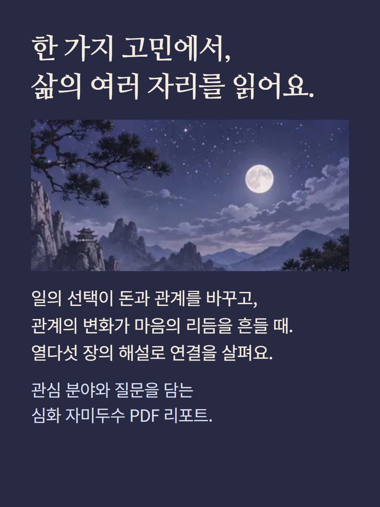
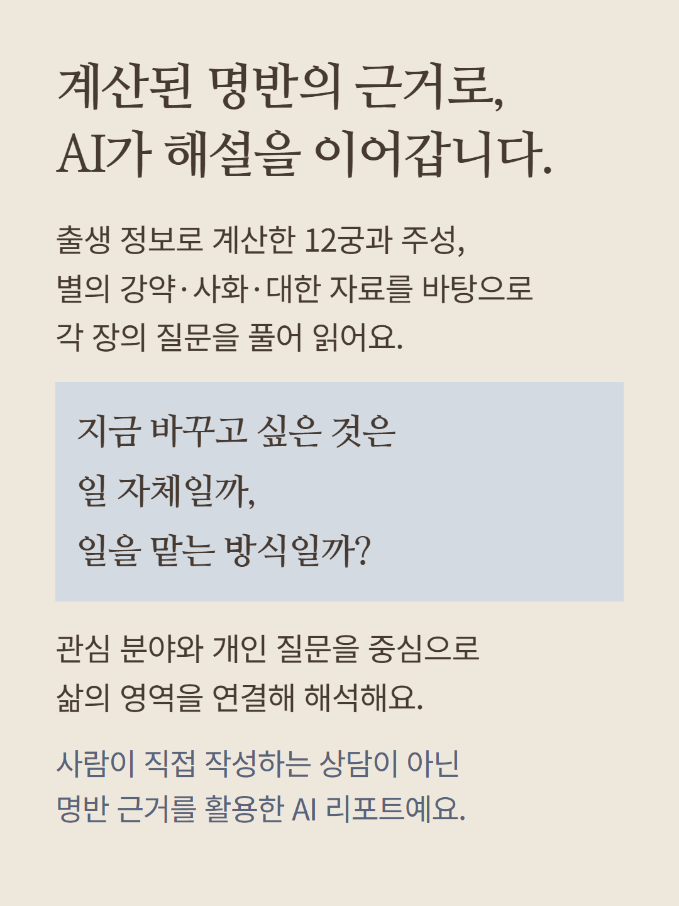
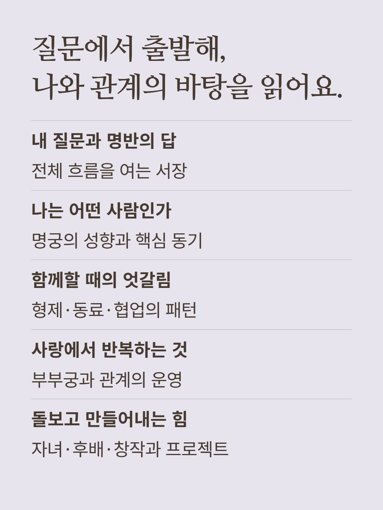
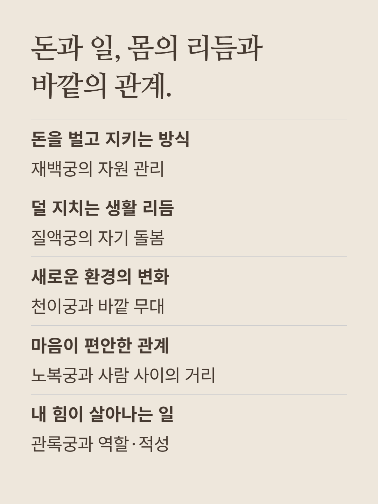
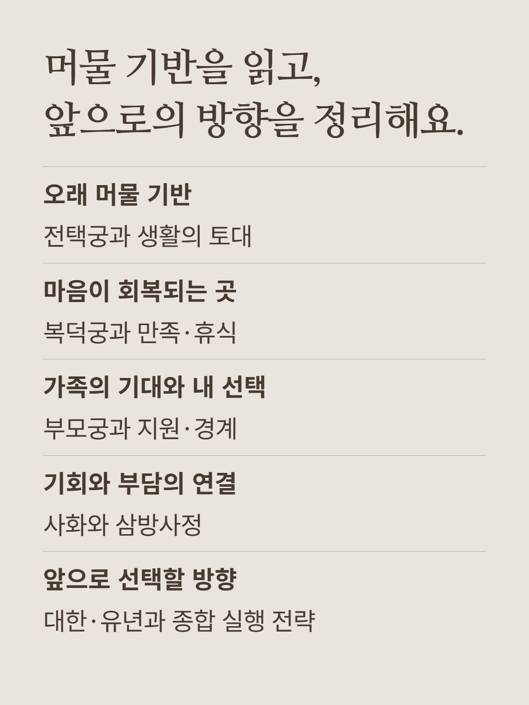
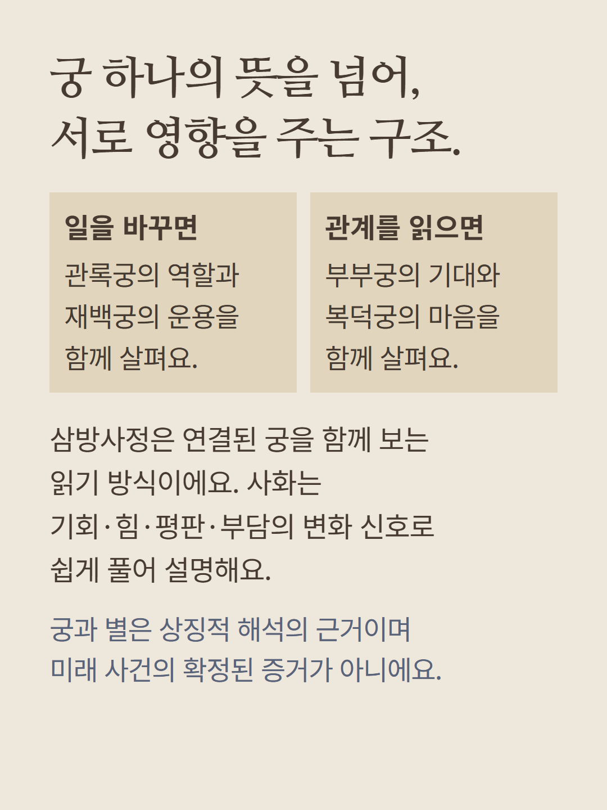
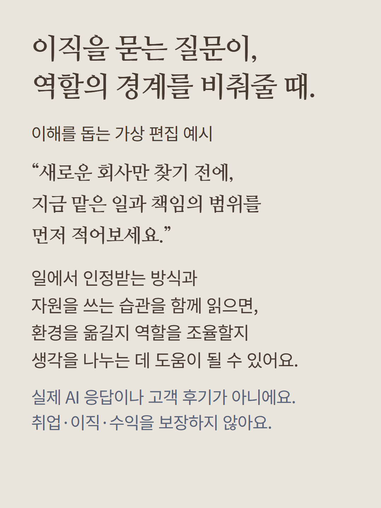
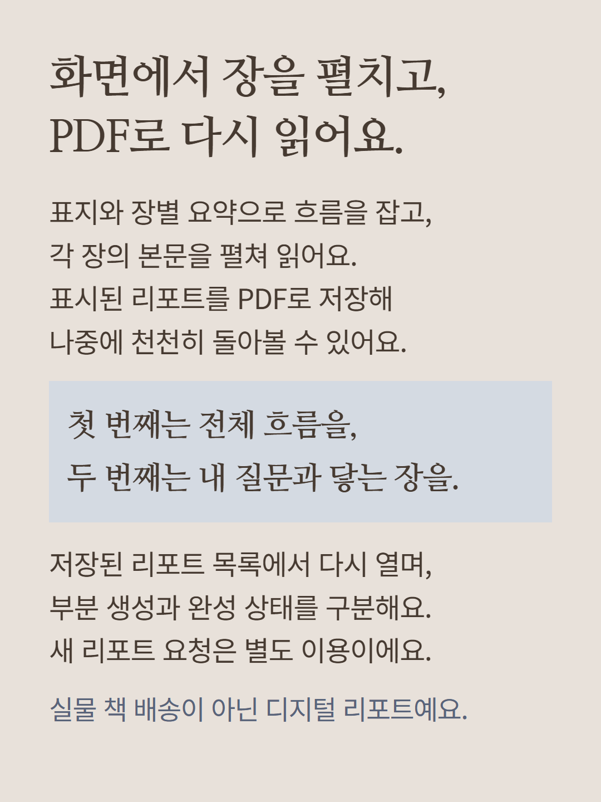
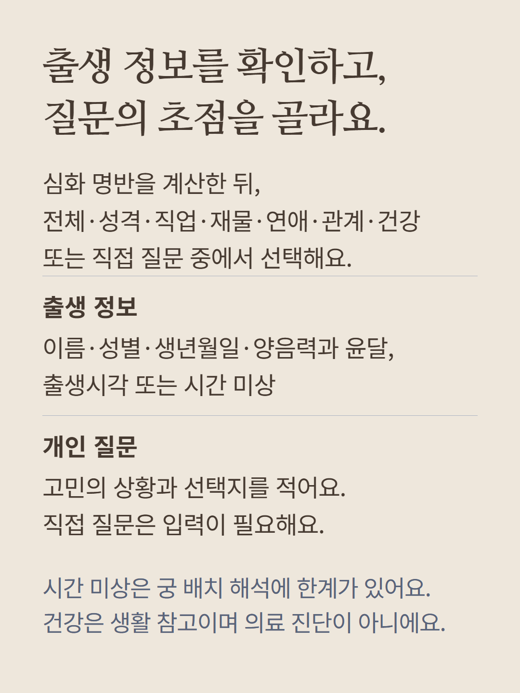
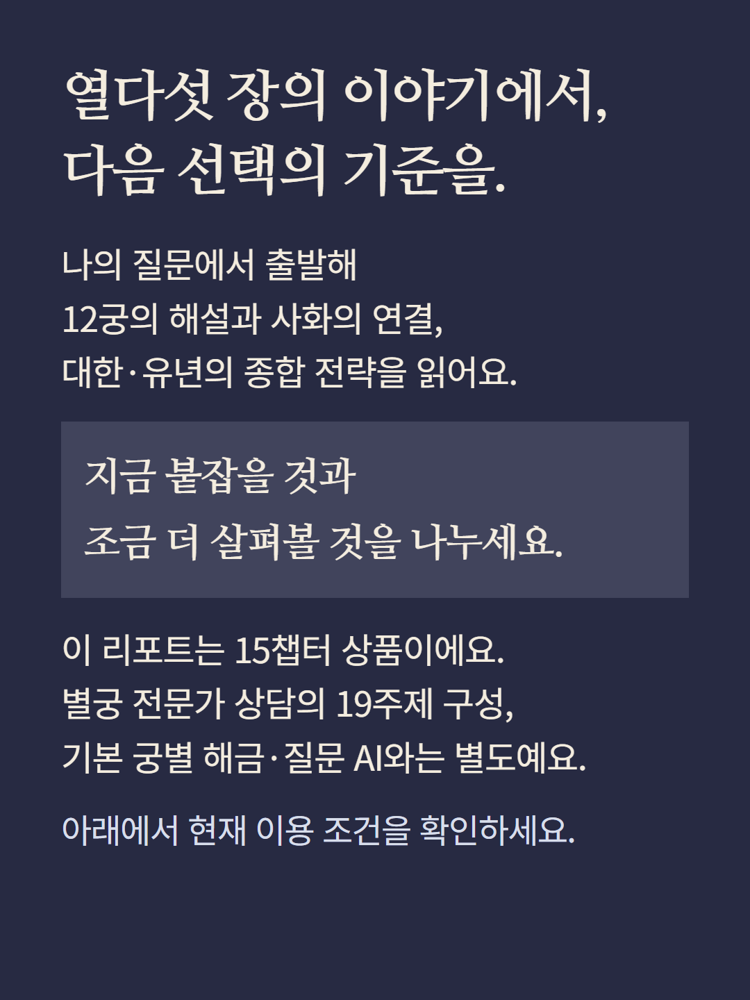

심화 명반 화면에서 관심분야와 개인질문을 담아 생성하는 AI 리포트입니다. 질문과 전체개관·명궁·형제궁·부부궁·자녀궁·재백궁·질액궁·천이궁·노복궁·관록궁·전택궁·복덕궁·부모궁·사화삼방사정·대한유년종합전략의15챕터를 제공합니다. 화면의 표지·장별요약·펼침본문과 PDF 저장,저장된 리포트 다시 열기를 지원하며 부분과 완성 상태를 구분합니다. 이름·성별·생년월일·양음력·윤달·출생시각 또는 미상 자료를 사용하고,전체/성격/직업/돈/연애/관계/건강/직접질문을 선택합니다. 직접질문 선택시 질문 입력이 필요합니다. 출생시간 미상은 해석 한계가 있으며 결과분량·예측의 적중·재물성과·의료진단을 보장하지 않습니다. AI가 작성하며 실물 배송이 아닙니다. 별도19주제 전문가 상담·기본해금·질문AI와 구분되며 새 리포트는 별도이용입니다. 예시는 가상편집으로 실제AI응답·고객후기가 아니며 이미지는 분위기연출입니다. 현재 이용조건을 확인해 주세요.